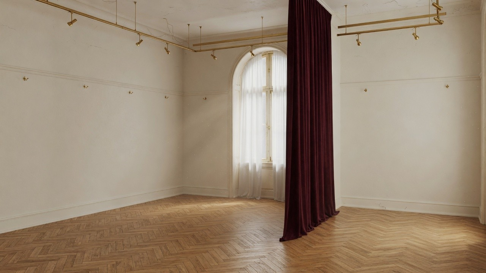

Блог · Музей клиники
Наше творчество
Этот раздел — музей клиники. Здесь мы бережно храним и показываем работы наших клиентов: картины, стихи, дневники, образы, которые рождаются на пути к себе.
Зачем этот музей
Творчество помогает выразить то, что трудно сказать словами. В «Нашем творчестве» нет оценок и соревнования — только пространство памяти и уважения. С согласия авторов работы могут «поселиться» в этой ретро-гостиной: на стенах, в шкафах, на полках.
Макет ниже — интерактивная гостиная. Нажмите на шкаф или тумбу, чтобы «открыть» дверцы. Пока экспозиция наполняется — на багетах ждут пустые холсты.
Экспозиция
Гостиная в ретро-стиле
Дорогой советский интерьер, ручные багеты и шкафы, в которых может жить ваша история.

Нажмите на шкаф или тумбу — дверцы «откроются». Это макет будущей экспозиции.